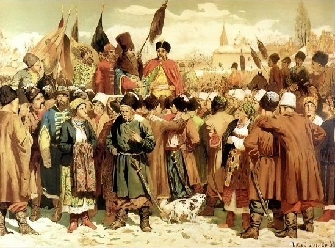
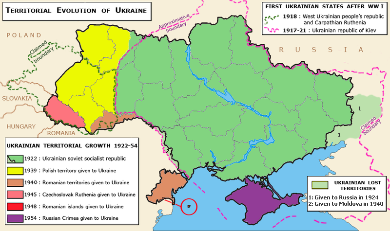

Kyivan Rus (9th–13th Century)
Kyivan Rus was a powerful medieval state centered around Kyiv. It was a cultural and political hub, influencing much of Eastern Europe. During this period, the region adopted Christianity in 988, a moment that profoundly shaped Ukrainian culture, religion, and identity.
Cossack Hetmanate (17th–18th Century)
The Cossack Hetmanate was an autonomous state established by the Ukrainian Cossacks. It became a symbol of Ukrainian resistance and self-governance. Led by figures like Bohdan Khmelnytsky, it played a key role in shaping national identity and resisting foreign domination.
Soviet Ukraine (1922–1991)
Under Soviet rule, Ukraine faced significant challenges, including the Holodomor famine (1932–1933), which claimed millions of lives. Despite repression, Ukrainians preserved their cultural and linguistic heritage. Soviet Ukraine also became a key industrial and scientific center within the USSR.
Independence (1991–Present)
On August 24, 1991, Ukraine declared independence, marking the end of Soviet rule. Since then, the country has faced political and economic transformations, as well as significant challenges, including conflicts and movements for reform. Ukraine's vibrant culture and resilience continue to inspire the world.